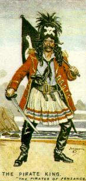

| |

- Introduction
- 1. General Thoughts About the Opera
- 1.1 Climbing over from Thespis to Pirates
- 1.1.1 Climbing over: The happy accident that wasn't
- 1.1.2 Historical Background
- 1.1.3 A Survey of the Literature
- 1.1.4 The Two Surviving Manuscript Libretti
- 1.1.5 The License Copy Text
- 1.1.6 Gilbert's Act I Manuscript Draft
- 1.1.7 Chronology of the Pirates Manuscript Libretti
- 1.1.8 The Chronology of the License Copy
- 1.1.9 Sullivan's Autograph
- 1.1.10 Gilbert's Letter Reconsidered
- 1.1.11 "Character" Arguments
- 1.1.12 Conclusions
- 1.2. Responses to Climbing Over
- 1.2.1 A possible explanation for LC/MD
- 1.2.2 The Gilbert letter a forgery?
- 1.2.3 The License Copy
- 1.2.4 Searle's Book
- 1.2.5 Gilbert's Letter Reconsidered
- 1.2.6 Thespis in Sorcerer?
- 1.3 Gilbertian Kant?
- 1.4 Every number is a belter
- 1.5 Pappistical Pirates
- 1.6 It's a Masterpiece
- 1.7 It gets tiresome
- 1.8 What a Dull Discussion!
- 2. The Plot
- 2.1 Plot oddities
- 2.2 Frederic's birthday
- 2.3 Updates
- 2.3.1 The Pirates of Pupukea
- 2.3.2 Keystone Kops tap dance
- 2.4 Stanley and his Women
- 2.5 A Formulaic Repetition
- 3. The Music
- 3.1 General Observations
- 3.1.1 Virile, rumbunctious atmosphere
- 3.2 Sighing Softly
- 3.2.1 Nothing to do with the plot!
- 3.2.2 A delightfully comic interlude
- 3.2.3 Incongruity is required
- 3.2.4 Unrepentant! No. A real Snoozer
- 3.2.5 A chance to sing properly
- 3.2.6 Gilbert's doing his plot stuff
- 3.2.7 Directors DO know
- 3.2.8 It is so outrageously silly
- 3.2.9 And fun to sing
- 3.3 Ah leave me not to pine
- 3.3.1 Dull stuff
- 3.3.2 The Meyerbeer Connection
- 3.3.3 And the Le Cid connection
- 3.4 Poor Wandering One
- 3.4.1 The Traviata connection
- 3.4.2 Even the Rosenkavalier connection!
- 3.5 Performers
- 3.5.1 Sheffield and Barrington
- 3.5.2 Owen Brannigan
- 3.5.3 Richard Watson
- 3.5.4 Valerie Masterson
- 3.5.5 Donald Adams
- 3.5.6 Mr. Frederic Clifton
- 3.5.7 Kenneth Sandford
- 3.5.8 Elizabeth Harwood & Peggy-Ann Jones
- 3.5.9 Thomas Round
- 3.5.10 Philip Potter
- 3.5.11 Linda Ronstadt
- 4. The Libretto
- 4.1 Frederic's Virginity
- 4.2 The Whys and Wherefores
- 4.3 Ruth vs the maidens
- 4.4 A false tip-off
- 4.5 Of legal knowledge
- 4.6 One maiden breast = double negative?
- 4.7 For what we ask
- 5. The characters
- 5.1 Frederic
- 5.1.1 A fool or a knave?
- 5.1.2 A Goop
- 5.1.3 Boring and "Heroic";
- 5.1.4 No Villains
- 5.1.5 The primacy of duty
- 5.1.6 A mathematician in fact
- 5.2 The Sergeant
- 5.3 Ruth
- 5.3.1 Her Deafness
- 5.3.2 If she had had the face
- 6. Stagecraft
- 6.1 Threatened with Emeutes
- 6.2 Let me tell you who they are
- 6.3 Important Consonants!
- 6.4 Noblemen Who Have Gone Wrong
- 7. Recordings
- 7.1 Records
- 7.1.1 Rattle or Ratchet?
- 8. Also Happened in Eh??
- 8.1 1880
- 8.1.1 World Exhibition
- 8.1.2 New York Streets
- 8.1.3 Bingo!
- 8.1.4 Boycott
- 8.1.5 Gladstone's Philanderings
- 8.1.6 Helen Keller
- 8.1.7 Uncle Remus & Ben Hur
- 8.1.8 Offenbach
- 8.1.9 Independent Transvaal
- 8.1.10 President Garfield
- 8.1.11 Cologne Cathedral
- 8.1.12 The Pacific War (sic)
- 8.1.13 Guildhall School of Music
- 8.1.14 Pasteur
- 8.1.15 Electric Generator
- 8.1.16 MacArthur
- 8.1.17 Canned Fruits
- 8.1.18 First Test Match
- 8.2 But What about 1879?
- 8.2.1 Zulu War
- 8.2.2 Cetewayo
- 8.2.3 London's Telephone Exchange
- 8.2.4 Alsace-Lorraine
- 8.2.5 And on the last Sabbath day
- 9. Piratemania
- 9.1 Web Sites
- 9.2 A Quiz
- 9.3 Pirated Beethoven Etc.?
- 9.3.1 Bizarre Sound
- 9.4 Television snips etc.
- 9.4.1 Which Barrymore?
- 9.4.2 Poor Wandering Secombe
- 9.4.3 The Smothers Brothers
- 9.4.4 Jeopardy
- 9.5 Duffey's Quips & Quibbles
- 9.5.1 First Set!
- 9.5.2 Oops!
- 9.5.3 Second Set!
- 9.5.4 Success has crowned
- 10. Appendix 1 -- Acronyms Translated
- 11. Appendix 2 -- Basses and Baritones
INTRODUCTION
In order to foil the copyright Pirates, the Pirates of Penzance was the first opera by Gilbert and Sullivan to be premiered (almost) simultaneously on both sides of the Atlantic. They themselves supervised the New York premiere on December 31st 1979 at the Fifth Avenue Theatre. On the afternoon of the day before, a D'Oyly Carte touring company presented a copyright performance at the small Bijou Theatre at Paignton in Devon. The first English run opened at the Opera Comique in London on the 3rd April 1880.
The following discussion is a compilation of the thoughts and opinions of subscribers to the SavoyNet Maillist between June 23rd and July 20th 1997. It should be noted that, while many of the contributors have performed in, and/or extensively researched, The Pirates of Penzance, the following opinions reflect the personal views of the individual contributors to which they are attributed. The original Pirates Archivist, Ken Krantz, was unfortunately unable to complete the project because of severe pressures at work and I took it up at a late stage. The archivist's comments, which are generally kept to a minimum, are given in italics in order to distinguish them from the main discussion. The original words of the individual contributors have been retained with, in general, only light editing. However, circularity did rear its head on some occasions and gentle but judicious pruning was undertaken where necessary. More than 250 individual postings were finally selected for inclusion and, in order to allow the reader as much freedom as possible in navigating through these, a comprehensive index has been compiled. Just follow the HTML links to those parts of the discussion that appeal to you.
Marc Shepherd has contributed a substantial and excellent resume of previous SavoyNet discussions about the inclusion of Climbing over the Rocky Mountains in Pirates. I have placed this in Section 1.1 and used Marc's own headings as indices. Rather than break the flow of Marc's Essay I have placed the various responses it generated in Section 1.2 with suitable indices.
Many SavoyNetters are fond of using acronyms for some common (and, occasionally, uncommon) phrases. However, for others in the group these remain a profound mystery and even an irritant. I had originally thought of substituting the complete phrase where these occurred in the discussions but that would be to remove what is a characteristic aspect of SavoyNet postings. Instead, I have left them untouched but provided Appendix 1 where all those that occur in these discussions are translated. Also, there was a detailed discussion on the differences between the bass and the baritone voice which, since this seems to be a perennial topic, I have included in Appendix 2 as reference background which might be useful to future discussions on SavoyNet.
|
|